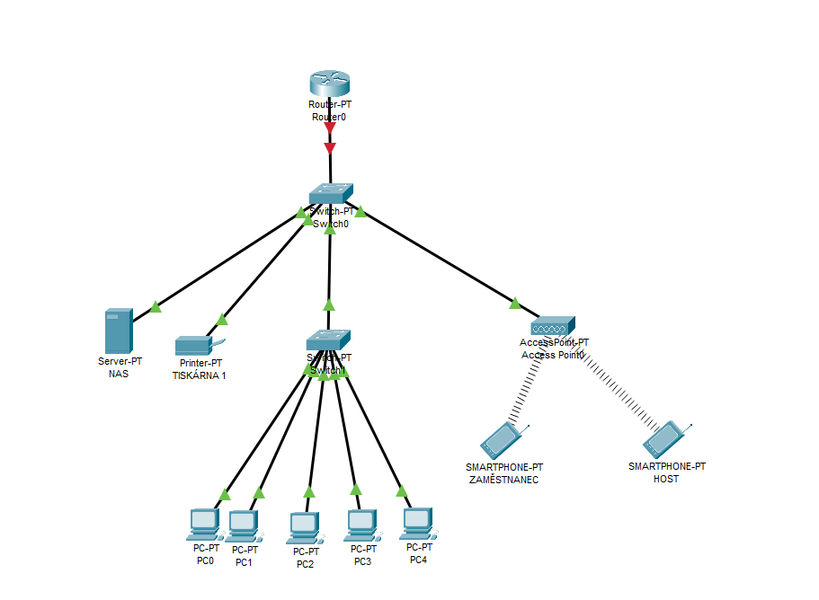

Jak bys navrhl síť?
Vyber správná zařízení pro daný scénář.
Těžká úloha
Zadání: Navrhni síť pro malou firmu: 5 kancelářských PC, 1 síťová tiskárna, 1 sdílené úložiště, Wi‑Fi pro zaměstnance, oddělená Wi‑Fi pro návštěvy, přístup k internetu. Návštěvní síť nesmí vidět firemní zařízení. Postupuj podle kroků níže.
Krok 1 - Kolik koncových zařízení bude v síti?
Kolik koncových zařízení musí být minimálně v této firmě připojeno do interní firemní sítě bez započítání síťových prvků a na každé wifi alespoň jedno zařízení?
Krok 2 - Čím propojíme firemní LAN?
Router zajistí přístup k internetu, ale pro propojení všech zařízení ve vnitřní síti potřebujeme ještě jedno zařízení. Jak se jmenuje?
Krok 3 - Wifi
V síti je potřeba zajistit bezdrátové připojení pro zaměstnance i návštěvy, které zařízení zároveň prodlouží dosah sítě, zatímco je příliš daleko od routeru.
Krok 4 - Segmentace sítě
Návštěvní síť nesmí vidět firemní zařízení. Jaká technologie nebo způsob oddělení sítí je pro to nejvhodnější?
Krok 5 - Kolik těchto sítí budeme potřebovat?
Pokud chceme oddělit firemní zařízení od návštěvní Wi-Fi, kolik samostatných sítí budeme minimálně potřebovat?

Jaký prefix je vhodný?
Jaký prefix je nejmenší možný, který tuto síť pokryje?
Jaká maska odpovídá tomuto prefixu?
Napiš celou masku nebo jen poslední oktet
Jaký je rozsah host adres?
Urči první a poslední použitelnou IP adresu pro zařízení. Použij třídu C.
Jaká je broadcast adresa?
Jaká je broadcast adresa této sítě?
Jakou adresu nastavíme jako gateway?
Router bude sloužit jako výchozí brána pro zařízení ve firemní síti.